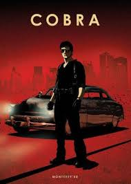

Em destaque



Sinopse: Em uma reserva de Mbouma no Senegal, um consultor externo chamado Gonzalo deve impedir a matança de elefantes por caçadores ilegais, mas falha ao tentar salvar o mais importante da reserva. Com isso, o jovem Alika e seu irmão mais novo Adu são forçados a fugir de sua pequena cidade em Mbouma e precisam lidar com a perseguição por testemunharem acidentamente o assassinato.
Diretor: Salvador Calvo Roteiro: Álvaro Augustín Estreia: 2020
Elenco: Anna Castillo | Álvaro Cervantes | Jesús Carroza | Miquel Fernández | Luis Tosar
Avaliação: 4.5 / 5.0
Sinopse: O filme apresena uma história vivida na paranoia da Guerra Fria, que revela como uma nave carregando um recém nascido, que seria conhecido depois como Superman, cai na União Soviética nos anos 1950. Criado em um coletivo, o rapaz cresce e se torna um símbolo do povo soviético, o que muda o mundo completamente, já que isso faz com que o Superman entre em conflito com o Batman. Lex Luthor e muitos outros.
Diretor: Sam Liu Roteiro: Mark Millar Estreia: 2020
Elenco: Jason Isaacs | Sasha Roiz | Amy Acker | Diedrich Bader
Avaliação: 3.6 / 5.0
Sinopse: Sonic, o porco-espinho azul mais famoso do mundo, se junta com os seus amigos para derrotar o terrível Doutor Eggman, um cientista louco que planeja dominar o mundo, e o Doutor Robotnik, responsável por aprisionar animais inocentes em robôs.
Diretor: Jeff Fowler Roteiro: Toru Nakahara Estreia: 2020
Elenco: Jim Carrey | Ben Schwartz | James Marsden | Tika Sumpter
Avaliação: 4.7 / 5.0
O filme Como Eu Era Antes de Você é simplesmente incrível! Recomento para todas as
pessoas, não
apenas as apaixonadas! Obrigada pela recomendação.
Estou animado com esse novo lançamento, Adú parece um filme muito comovente. Volto para avaliar depois que assistir.
Gostando bastante do site, sempre atualizado com os melhores filmes do momento. Poderia colocar mais filmes de comédia como Aprendiz de Espiã. Filme é demais!
Esse Jogos Vorazes em destaque é muito envolvente! O filme tem ação, drama, emoção e romance tudo ao mesmo tempo, realmente gostei muito e recomento.
O filme Cobra não deveria estar nessa lista. Não gostei muito do filme, parece meio lento. Além disso apresenta um enredo pouco evolvente
Acompanho o site a algum tempo e estou gostando das atualizações feitas. Recomento colocar sinopses de mais filmes.